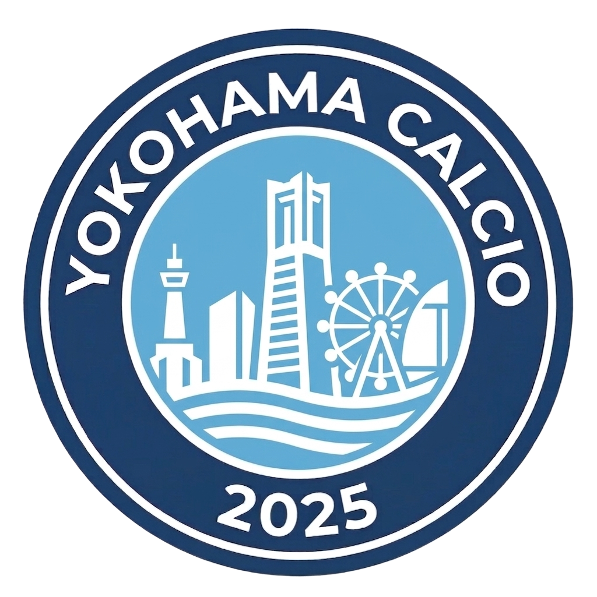

YOKOHAMA CALCIOYokohama Calcioに関してよくいただく質問とその回答をまとめています。
はい、大歓迎です！現在、チームの再構築を進めており、初心者から経験者まで一緒にチームを作っていくメンバーを募集しています。ブランクがある方も歓迎します。
体験参加は無料です。チームの雰囲気や練習内容を確認してから加入を検討していただけます。「お問い合わせ」フォームよりお気軽にご連絡ください。
はい、募集しています。試合や練習のサポート、写真・動画撮影、SNS管理などをお手伝いいただける方を歓迎しています。サッカーの知識がなくても問題ありません。
主に横浜市内の公共施設（元町周辺のスポーツ施設や横浜市内のグラウンド）で活動しています。
主に週末（土曜日・日曜日）や祝日に活動を行っています。
月額会費は2,000円です。グラウンド利用料や備品購入費、チーム運営費に充てられます。
体験参加の際は動きやすい服装とシューズ（スパイクまたはトレシュー）をご用意ください。正式加入後にチームユニフォームのご案内をいたします。